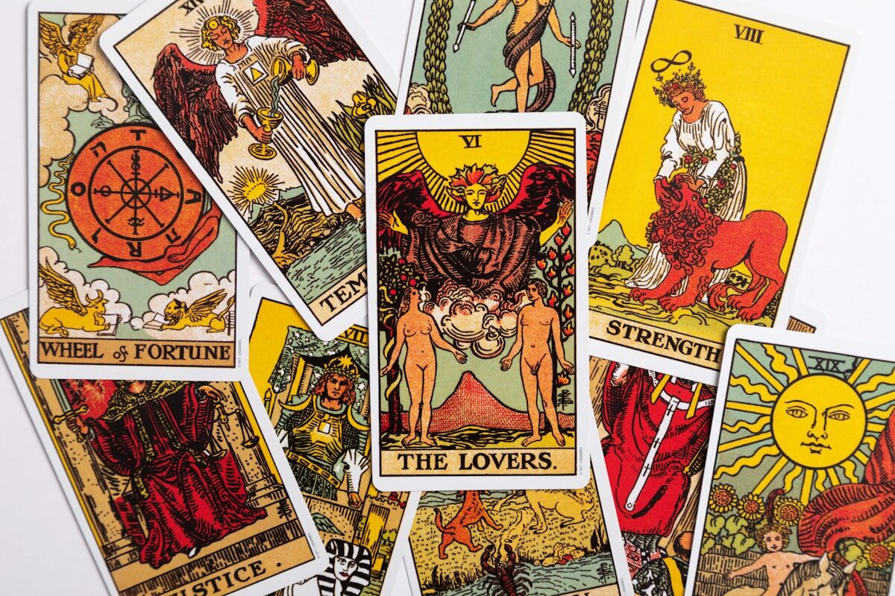

Trusted by thousands of callers nationwide
Future Tarot Reading in Burbank, CA — Live, 24/7, From $1/Min
A Future Tarot Reading in Burbank gets you real, focused answers by phone — no drive down Olive Avenue, no wait at the Burbank Town Center. Every reader on our line is hand-vetted by our master psychics. Connect in under 60 seconds, 24/7, from Magnolia Park to the Rancho. Your first minute is $1 and you can hang up anytime.
- Hand-vetted readers
- Available 24/7
- Hang up anytime

Call and speak with a live reader for a future tarot reading that turns "I just need to know" into a clear sense of direction. No appointment, no waiting — first-time callers get an introductory rate of $1 per minute, or 15 minutes for $10, and you can hang up the moment you have your answer.
What Is a Future Tarot Reading?
A future tarot reading uses the cards to look at what's likely ahead — the direction your situation is trending, the choices stacking up in front of you, and how to meet what's coming instead of being blindsided by it. Your reader shuffles and lays out cards from the 78-card deck, then reads them against your question, often with positions for past influence, present energy, and likely outcome. It doesn't carve your fate in stone. Looking ahead is the heart of what tarot does — and the most useful version of it tells you not just what's coming, but what you can do about it.
How Does a Future Tarot Reading Work by Phone?
Your reader pulls and interprets the cards on their end while tuning into your energy through your voice and your intention. The tarot answers to focus, not to location — so a phone future tarot reading is just as clear as one in person. You name what you want to look ahead on, your reader asks a clarifying question or two, lays the spread, and walks you through what each position says about where you are and where the current path leads.
Can a Future Tarot Reading Predict Exactly What Will Happen?
Not exactly — and any reader who promises a guaranteed outcome is selling certainty that doesn't exist. What a future tarot reading does well is read the trajectory you're on right now: the momentum, the influences, and the most likely direction if nothing changes. The moment you make a different choice, the path adjusts — which is the whole point. A skilled reader frames the future as something you can shape, showing you the fork in the road and what each branch tends to lead to, so you walk away prepared rather than just informed.
What Questions Should I Ask in a Future Tarot Reading?
The question you bring shapes how useful the answer is. Open-ended "what" and "how" questions beat "when will it happen" ones, because they give you direction instead of a countdown. Strong framings:
"What's ahead if I stay on this path?"
Reads the current trajectory honestly.
"How can I prepare for what's coming?"
Turns foresight into a plan.
"What do I need to know before I decide?"
Surfaces what you're not seeing yet.
"What's the likely outcome of this choice?"
Compares the roads in front of you.
"What's coming that I should watch for?"
Flags the influences gathering.
"What would change my direction for the better?"
Points to the lever you can pull.
Who Is the Best Future Tarot Reader to Call?
The best reader for a look ahead is one who is genuinely intuitive and grounded enough to tell you the likely path without inflating it into a promise. Every reader on our line is hand-vetted by our master psychics, so you're not gambling on a stranger from a directory. Tell us you want to look at what's ahead and we'll match you with the reader whose strength is exactly that, usually in under 60 seconds. If the fit isn't right, hang up anytime, and our 100% satisfaction promise stands behind the call.
What Do I Do If the Future Looks Uncertain or Hard?
Steady yourself — an uncertain or difficult card is a heads-up, not a hex. Tarot describes the energy and momentum in motion now, and uncertainty in a spread usually means the outcome genuinely isn't fixed yet, which means you still have a hand in it. A reading that shows a hard stretch ahead is doing you a favor: it gives you lead time to prepare, soften the landing, or change course. A skilled reader won't leave you with an ominous card and silence — they'll show you the timing, the influences, and the move that shifts it. If the deeper question is really about purpose and direction, your reader may suggest a clairvoyant reading to widen the lens.
Common Reasons People Call for a Future Tarot Reading
Callers reach for a future tarot reading when the waiting gets loud:
"What's the next year going to bring?"
A read on the bigger arc ahead.
"Is this change going to work out?"
The likely direction of a leap.
"What's coming in my love life?"
Where the heart-path is trending.
"Should I wait or make a move now?"
Timing on a decision you're holding.
"What am I not seeing that's ahead?"
Blind spots before they arrive.
"How do I stop dreading the unknown?"
Clarity to replace the spiral.
Future Tarot Cards and What They Often Mean
No single card locks your future — meaning depends on position, surrounding cards, and your question. A few, though, carry strong forward-looking weight. The Wheel of Fortune is change, cycles, and a turning point arriving. The Star is hope, renewal, and a clearer road after difficulty. The World signals completion and a chapter coming full circle. The Eight of Wands is fast movement and news on the way. The Death card, almost never literal, marks an ending that clears space for what's next. The Sun is success, clarity, and momentum turning in your favor. Your reader weaves these into one story — the deck speaks in narrative, never a single word. For background on the deck and its long history, see the tarot.
Future Tarot Reading vs. Psychic Prediction vs. Clairvoyant Reading
They overlap, but each leads with a different tool. A future tarot reading uses the structured language of the cards to map what's trending and the choices around it. A psychic prediction leads with the reader's direct sense of what's ahead. A clairvoyant reading draws on inner sight to perceive influences around you. Many callers start with future tarot for a concrete read on the path, then go deeper if the question turns out to be bigger than timing.
How to Prepare for Your Future Tarot Reading
Find a quiet space, take a few slow breaths, and decide what area of the future you most want to look at before you dial — "everything" gives a scattered answer, one focused path gives a clear one. Come curious rather than bracing for a verdict; the readings that help most are the ones you let inform a choice. And the practical part: first-time callers pay $1 per minute, you can do 15 minutes for $10, and you can hang up the second you have what you need.
Stop Dreading the Unknown — Look at It
The cards will show you the path you're on and how to meet what's coming. We'll connect you with the right hand-vetted reader in under 60 seconds. $1/min first call · 15 minutes for $10 · hang up anytime · 100% satisfaction promise.
Call (888) 920-6662 NowWhat Callers Say About Their Future Tarot Reading
"I called because I couldn't stop spiraling about a move I was scared to make. He laid out what was ahead either way — and gave me something to actually do. The dread lifted on the call."
"She didn't promise me a fairy tale. She told me the likely path and exactly what would change it. Months later it tracked — and so did her advice."
Explore every reading type on our phone psychic readings hub, or widen the lens with a clairvoyant reading.
Get Your Future Tarot Reading Now
Here's what happens when you call: you're connected to a hand-vetted reader in under 60 seconds, they pull the cards on what's ahead, and you hang up prepared instead of anxious.
- Hand-vetted reader
- Connected in under 60 seconds
- $1/min first call · 15 min for $10
- Hang up anytime
- 100% satisfaction promise